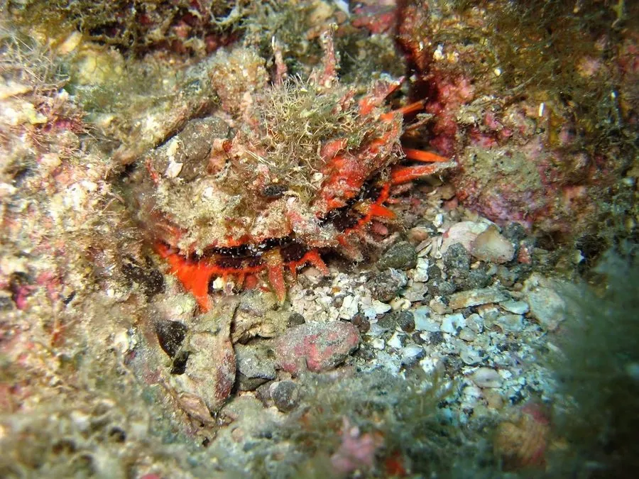

软体动物 · 动物界
海菊蛤 Spondylus princeps

壳面长满菊花状棘刺的大型双壳类，用右壳固着在礁石上，壳色鲜艳，是热带珊瑚礁中著名的观赏贝类。
- 分类
- 门软体动物门纲双壳纲目珍珠贝目科海菊蛤科属海菊蛤属
- 栖息环境
- 热带珊瑚礁和岩礁斜坡，水深数米至数十米，喜水流较强的礁缘
- 地理分布
- 印度洋至西太平洋热带海域，包括菲律宾、印度尼西亚、澳大利亚北部和中国南海
- 保护级别
- 尚无专门评估；过度采捕使局部种群下降
物种志
海菊蛤的贝壳大而厚重，壳长约十至十五厘米，两壳不等，右壳较平，用来固着在礁石上，左壳隆起，壳面长满长短不一的棘刺，刺的形状像菊花的花瓣，海菊蛤之名由此而来。壳色鲜艳，多为橙红、紫红或黄色，两壳颜色常不一致。壳内面白色，铰合部有发达的铰合齿。它没有足丝，靠右壳直接粘附在礁石上，一生不再移动。
它分布于印度洋至西太平洋的热带海域，包括菲律宾、印度尼西亚、澳大利亚北部和中国南海，栖息在珊瑚礁和岩礁的斜坡上，水深数米至数十米，尤其喜欢水流较强、珊瑚繁茂的礁缘。它靠鳃滤食浮游植物和有机颗粒，生长较慢。繁殖期在夏季，雌雄异体，幼虫经浮游阶段后附着到礁石上。海菊蛤壳色艳丽、棘刺奇特，是贝类收藏中的名贵种类，也常被制成工艺品，过度采捕使其局部种群下降。目前尚无专门的保护评估。
形态与习性
- 食性靠鳃滤食浮游植物和有机颗粒
- 壳长约十至十五厘米，壳厚重
- 棘刺左壳长满菊花瓣状棘刺，颜色鲜艳
- 固着右壳直接粘附礁石，终生不移动
- 栖息深度水深数米至数十米的礁坡和礁缘
- 利用名贵观赏贝，可制工艺品
趣味知识
- 海菊蛤左壳上的棘刺展开像一朵菊花，颜色从橙红到紫红都有。
- 它用右壳把自己粘在礁石上，一旦固定就终生不再挪动。
- 两壳颜色常常不同，是海菊蛤收藏者辨别种类的重要依据。